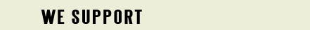

This is an amazing organisation that believes “Together We Are Stronger”. It brings together an international community of people to act as a watchdog for the poorly legislated multi-billion pet products industry. Comprises pet owners and veterinarians from around the world who join together in strength to take practical, positive action to protect the wellbeing of pets. Expands awareness and understanding of the multi-billion international pet products industry, and the harm that is being done to pets. Raises awareness within the pet owning community to effect positive change on behalf of our pets. Have a look at their website and sign up to their supporters list www.petwelfarealliance.org

We have dedicated this page to charities, organizations, and companies that have worked very to hard to make a positive change in the pet industry. We support the work they do and aim to constantly bring to the forefront their incredible efforts.
If you would like to be included on this page please email all your information to: info@ascas.org
The Campaign for Safe Cosmetics is a very important organisation and needs everyones support. The Campaign for Safe Cosmetics is a national coalition working to eliminate harmful chemicals from personal care products. They are committed to protecting the health of people and the environment while simultaneously fostering a vibrant, green economy that creates new opportunities for sustainable businesses. To this end, they are working with hundreds of forward-thinking companies, more than 100 endorsing organizations, and thousands of individuals to shift the cosmetics market and federal and state policies toward truly safe products.
Companies in the Campaign for Safe Cosmetics Business Network support their mission and will work with them to:
- Stimulate the innovation of the safe, non-toxic personal care products that the world market is demanding;
- Protect consumers, workers and the environment from exposure to chemicals linked to cancer, reproductive harm and other adverse health impacts; and
- Ensure everyone in the U.S. has access to safe personal care products, regardless of geography and income.
Consumers want to know that the personal care products they are using are safe; as a member of the beauty industry you can help win their confidence by supporting the mission of the Campaign. They will highlight Business Network members in their media outreach, on their website and community forums, and in their grassroots outreach. www.safecosmetics.org
Hounds First Sighthound rescues and rehomes sighthounds including Lurchers, Greyhounds, Whippets and Salukis as well as other types of sighthound across the UK. - See more at: www.houndsfirst.co.uk
Birmingham Greyhound Protection was set up in June 2012 by Kerry Elliman because after a few years of rehoming greyhounds she could see there was a big gap, a need to help greyhounds that were not lucky enough to be put into the mainstream greyhound rescues. www.birminghamgreyhoundprotection.co.uk
Asociacion BaasGalgo is a wonderful rehoming centre in Spain which rescues Spanish Greyhounds. Their website is www.baasgalgo.com
Scruples Whippet Rescue is an organisation set up to rescue, rehabilitate where necessary, and rehome whippets in need of care and attention by reason of sickness, maltreatment, poor circumstances or ill usage. They will never permit a dog in their care to be put to sleep.
They also provide a rehoming service for whippets whose owners who can no longer keep their much loved friends due to circumstances beyond their control. This service guarantees that those whippets are placed in safe, loving forever homes. www.scrupleswhippetrescue.co.uk
K-9 Angels is a UK based registered charity set up in 2011 to address the stray dog situation in Romania, Bulgaria and Algeria and the canine victims of the dog meat trade in Thailand after there was a need found in certain areas of these countries which was not being addressed.
K-9 Angels provides a much needed network link between dog rescuers in these countries and prospective adopters in the UK, as well as funding for spay and neuter programmes, food and material aid, shelters, medical and veterinary aid.
K-9 Angels prides itself on its lack of discrimination in helping all manner of rescues in these countries and also in its rehoming process which vets each person on their individual needs.
K-9 Angels would like to branch out to many more worldwide countries in the future in order to help tackle the worldwide stray dog problem. www.k-9angels.co.uk